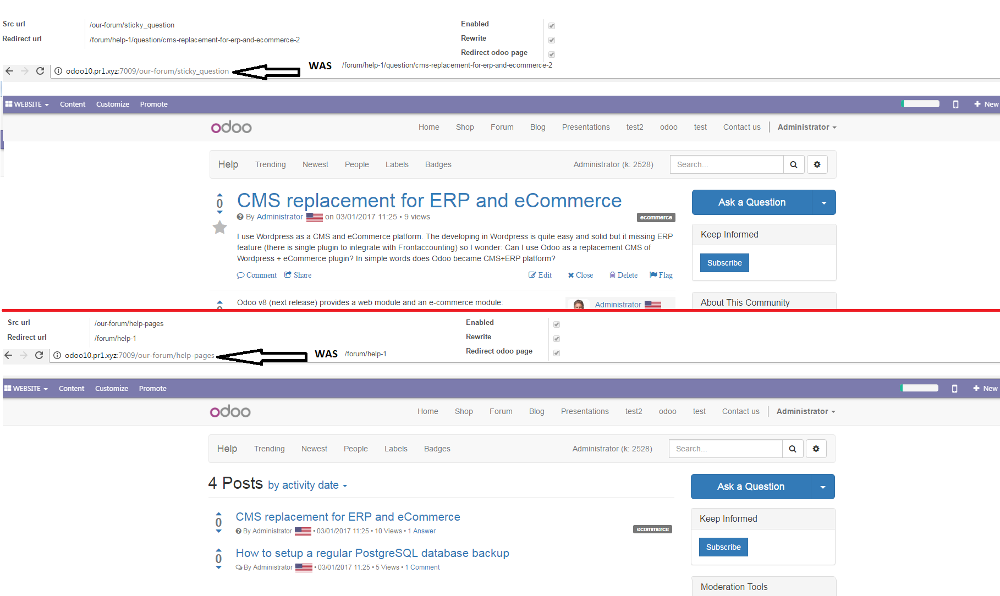
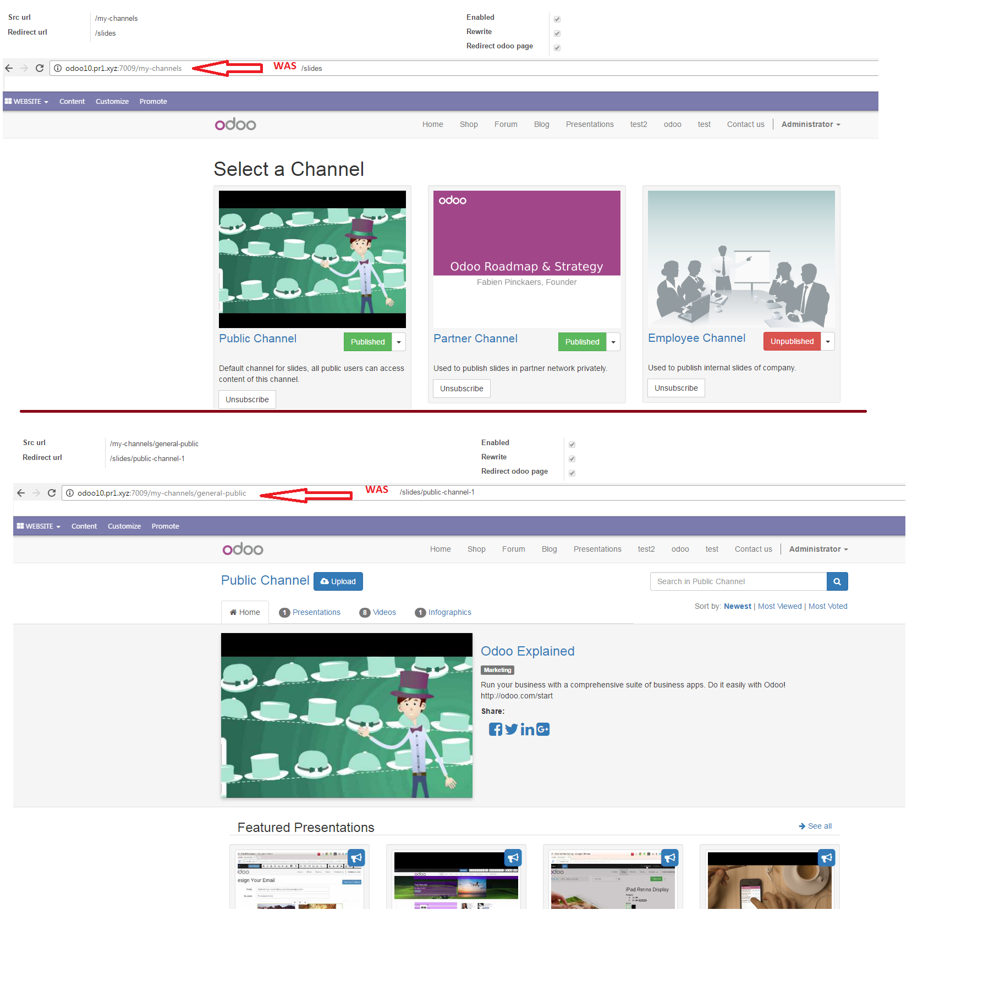

Full URL Rewrite capability within Odoo. - Perfect for SEO and for migrating existing websites.
For our advanced SEO module with full page listing and many other features please go here
Make pages such as /news/IT/newservers rather than have to have /page/newservers.
Custom almost ANY URL in Odoo!!!!
Allows users to:
Force SSL on sitemap toggle - This forces the /sitemap.xml to be generated with HTTPS.
Robots file integrated with Sitemap. - Disallow rules in the robots file now remove the entries from the sitemap. *note ensure Python module: robotparser is installed.
New feature, - Generic 301 redirect! Now redirect /anything/that/might/not/exist to /anything. Perfect for redirecting old website links to odoo URLs or even re-written odoo urls.
The url redirect can be found under Settings->Website Settings->URL Redirect Config in Odoo 8
In Odoo 9/10 The url redirect is under Website Admin -> URL Redirect Config.
Please note you may need to give your user URL Redirect Admin Role and reload the page to see the menu item.
To redirect an old page on your website for example /testing/odoo to an odoo page /page/odoo simply add src URL: /testing/odoo, redirect url: /page/odoo and tick enabled. Then upon going to 'your website'/testing/odoo the system will automatically redirect with a 301 (Moved permanently) to /page/odoo.
To rewrite a website page, for example /page/test to /testing/test. Simply set src url to /testing/test, redirect url to /page/test and tick rewrite. (see picture).
If you tick redirect Odoo page then if someone tries to goto the original /page/test then it will be 301 redirected as well.
This also works with shop pages and blog pages, slide pages and forum pages!
Generic redirect, here we are redirecting a page /i-dont/exist to the rewritten /page/advanced-seo page which has been shorthanded to its rewritten /advanced-seo.
 Finally the Sitemap.xml file is also modified with the new page entries
Please note, this module is licensed per server.